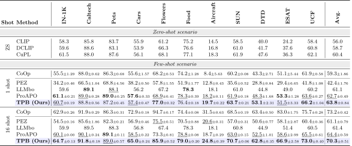
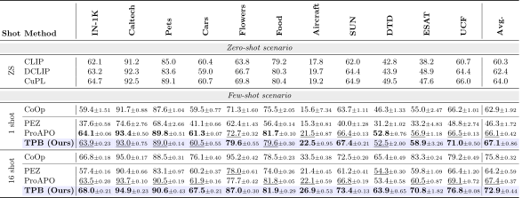
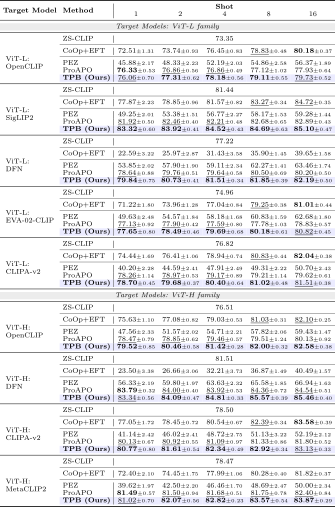
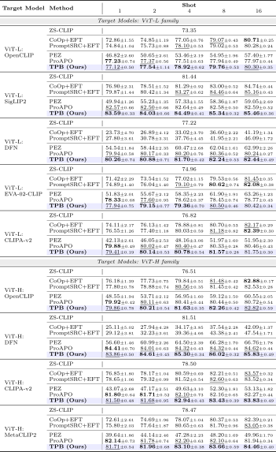
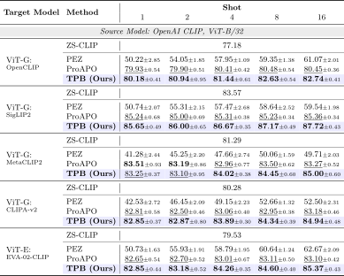
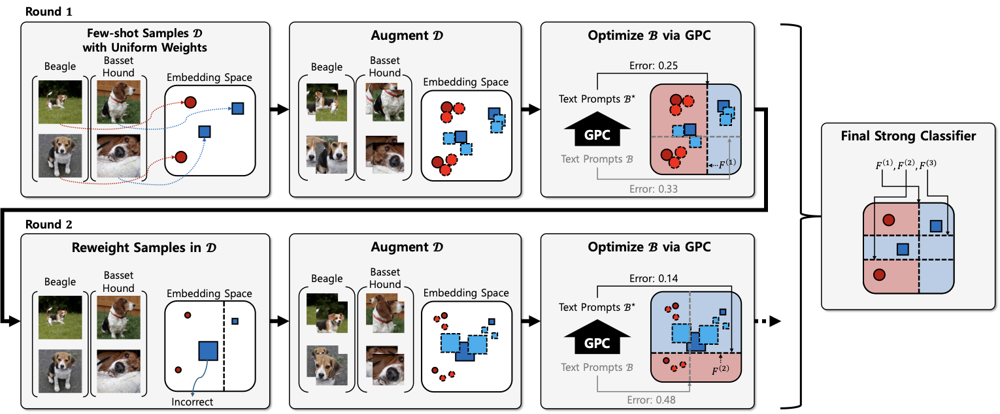
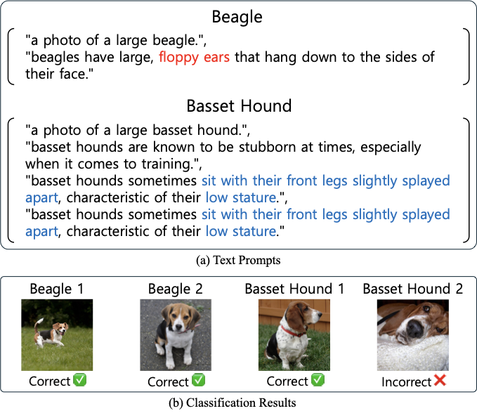

Soft prompt learning
Benefits from more shots, but remains model-specific
Soft prompts improve with additional labeled examples, but remain tied to the VLM on which they were trained.
- Benefits from additional shots
- Direct cross-model reuse
Natural-language prompts transfer across heterogeneous VLMs, but existing text-prompting methods tend to saturate as shots increase. TPB turns prompt construction into a boosting loop: each round focuses on examples the current ensemble still misses. The resulting prompt ensemble scales with supervision on the source model, and its shot-driven gains persist when transferred to other VLMs.
Soft prompt learning
Soft prompts improve with additional labeled examples, but remain tied to the VLM on which they were trained.
Prior text prompting
Existing text-prompting methods can be transferred to other VLMs, but their performance tends to saturate as more labeled examples are added.
Text Prompt Boosting
TPB improves with additional labeled examples on the source VLM and retains those gains when transferred to other VLMs.
On the OpenAI CLIP ViT-B/32 source model, TPB gains 5.80 pp from one to sixteen shots. When the prompt ensembles are transferred to other VLMs without additional tuning, shot-driven gains of 2.41 pp on five ViT-L targets and 2.51 pp on four ViT-H targets remain.
1-to-16-shot gain on the ViT-B/32 source model
1-to-16-shot gain after transfer from ViT-B/32 to ViT-L targets
1-to-16-shot gain after transfer from ViT-B/32 to ViT-H targets
Source model: OpenAI CLIP ViT-B/32
Across eleven datasets and three seeds, TPB rises from 67.07 to 72.87 (+5.80 pp), while ProAPO moves from 66.07 to 67.35 (+1.28 pp).
OpenAI CLIP ViT-B/32 to larger VLMs
After direct transfer from OpenAI CLIP ViT-B/32, TPB retains 1-to-16-shot gains of 2.41 points on ViT-L targets and 2.51 on ViT-H targets; ProAPO retains 0.42 and 0.32, respectively.
Dataset-wise Top-1 accuracy across zero-, one-, and sixteen-shot settings.


Methods are optimized on the indicated OpenAI CLIP source model and evaluated directly on larger heterogeneous target VLMs.



At each boosting round, GPC constructs a class-wise prompt-bank classifier under the current sample weights. Misclassified images receive more weight, directing the next round toward unresolved cases; all rounds are combined into the final ensemble.
Using augmented training views and the current sample weights, GPC selects class-wise banks from CLIP templates, LLM descriptions, and their concatenations.
The classifier is evaluated on the original few-shot set, and misclassified images receive more weight in the next round.
After M rounds, the class-confidence outputs of all prompt-bank classifiers are aggregated into one final prediction.


Beagle vs. basset hound
The current bank relies on floppy ears, low stature, and splayed legs. Those cues classify the other examples, but legs and stature are obscured in the lying basset hound.
The current weak classifier labels the lying basset hound as a beagle.
This image receives more weight for the next round.
The next GPC round prioritizes alternative cues, such as facial wrinkles or snout shape.
A single error that can be diluted in aggregate accuracy becomes a direct objective for the next prompt classifier.
Could the transfer gains come simply from seeing more augmented views? In the 16-shot setting, we hold total exposure fixed at M × a = 200 and trade augmentation factor a for boosting rounds M.
Fixed-exposure ablation
Putting most of the budget into augmentation gives the best source result (74.42). Shifting the same budget toward more boosting rounds raises both transfer averages monotonically, reaching 82.24 on ViT-L and 84.49 on ViT-H targets.
With exposure held constant, the transfer trend points to iterative boosting rather than augmentation volume alone.
| Model | M/a1/200 | M/a5/40 | M/a10/20 | M/a50/4 |
|---|---|---|---|---|
| Source ViT-B/32 | 74.42 | 72.94 | 73.32 | 73.36 |
| Target ViT-L avg. | 81.54 | 81.78 | 82.13 | 82.24 |
| Target ViT-H avg. | 83.12 | 83.72 | 83.98 | 84.49 |
@inproceedings{jin2026tpb,
title = {AdaBoosting Text Prompts for Vision-Language Models},
author = {Jin, Seokhee and Sung, Changhwan and Mun, Sunung and Kim, Hoyoung and Ok, Jungseul},
booktitle = {European Conference on Computer Vision (ECCV)},
year = {2026}
}